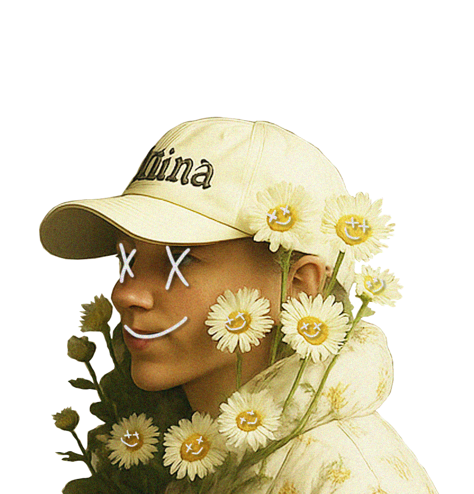

H3LLOWORLD


Express your ideas!
H3LLOWORLD is a project that brings together developers and designers.
You can create clothes with fabrics made of electronic paper and code them after connecting them to a PC.
WHY DAISY?
The flower language of the daisy is beauty and innocence.
Decorate it as you wish and make it beautiful.

HOW TO MAKE?
After the designer finalizes the pattern on a PC, the pixel-level display is printed onto flexible fabric using e-paper ink.
The core electronic circuit is mounted onto the printed e-paper fabric, and conductive ink traces are connected via micro-soldering or bonding techniques.
A QC specialist verifies display, circuit connections, and durability before packaging.
FUNDING START
Delivery will be completed within two weeks after funding is completed. Please support and share this project!